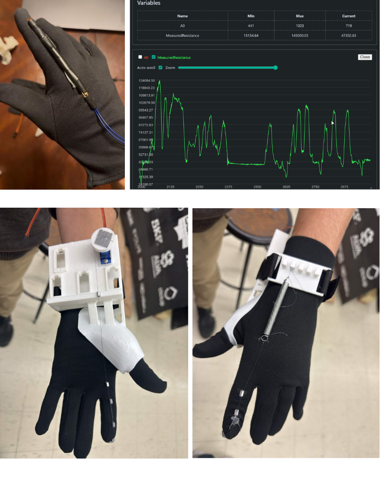
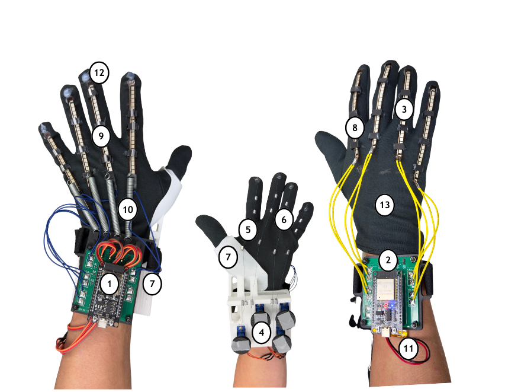
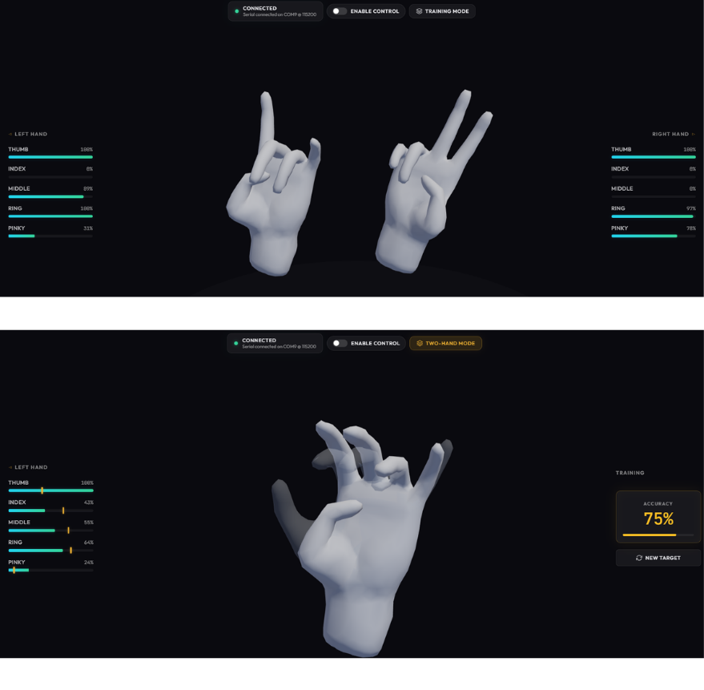

Rehab
Redefined
Stroke often causes long-term hand impairment, limiting a person’s ability to perform everyday tasks. While proprioceptive training has been shown to improve motor recovery, few rehabilitation tools specifically focus on restoring hand proprioception. REX0 is a dual-glove rehabilitation system designed to address this challenge through real-time motion replication. A Control Glove measures finger movement using flex sensors, while a Response Glove mirrors those movements using servo-driven tendon mechanisms and spring retraction. The gloves communicate wirelessly using ESP-NOW, enabling low-latency motion mirroring. A companion web interface provides real-time visualization and guided training exercises, creating an interactive platform for repeatable hand rehabilitation.
Background
Stroke is a leading cause of long-term disability, with 55–75% of survivors experiencing upper limb impairment, making the recovery of fine motor control a major challenge in post-stroke rehabilitation. Although some recovery occurs naturally, motor improvements often plateau within the first six months, highlighting the need for rehabilitation technologies that support consistent, high-repetition therapy.
One promising approach is proprioceptive training, which focuses on restoring the body’s ability to sense limb position and movement. Proprioception plays a critical role in coordinated motion and is often disrupted after a stroke, particularly in the hands. Recent studies have shown that proprioceptive training can improve upper limb motor function in stroke patients.
To explore this approach, we developed REX0, a dual-glove rehabilitation system designed to assist hand recovery through motion replication. The system consists of a Control Glove, worn on the functional hand, and a Response Glove, worn on the impaired hand. Flex sensors on the Control Glove measure finger bending and transmit the data wirelessly to the Response Glove, which reproduces the movement using servo-driven tendon mechanisms and spring retraction. This process enables a training method we call Motion Mimicry, where movements from the healthy hand are mirrored on the impaired hand to support rehabilitation.
To support the hardware system, a lightweight web-based interface provides real-time visualization of finger motion, system status, and training performance. The interface includes animated 3D hand models and a guided training mode that evaluates how closely a user’s hand posture matches target configurations, allowing clinicians and users to monitor progress during rehabilitation exercises.

Our Design
REX0 is a dual-glove rehabilitation system designed to support hand recovery through real-time motion replication. The system consists of a Control Glove worn on the functional hand and a Response Glove worn on the impaired hand. Finger movements measured on the Control Glove are transmitted wirelessly to the Response Glove, which reproduces the motion to support rehabilitation through a method we call Motion Mimicry.
Materials
The main components used to build the REX0 prototype are shown in the materials diagram and listed below:
- ESP32 WROOM Dev Board (x2)
- Custom PCB
- Long Flex Sensor (x10)
- Continuous Rotation Micro Servo – FS90R (x5)
- Fishing Wire
- Metal Crimps
- 3D Printed Glove Attachment (with Velcro)
- 3D Printed Bridge
- 3D Printed Bridge with Crimp
- Extension Springs
- 3.7V LiPo Battery
- Hot Glue
- Fabric Gloves

Control Glove
The Control Glove is responsible for sensing finger movement. Each finger is fitted with a flex sensor that changes resistance as the finger bends. These readings are measured by an ESP32 microcontroller and converted into finger position data. The processed sensor values are then transmitted wirelessly to the Response Glove using ESP-NOW, allowing the system to capture the motion of the user’s healthy hand in near real time.
Response Glove
The Response Glove is designed to mechanically reproduce the movements captured by the Control Glove. It receives finger position data wirelessly and actuates its fingers until its measured positions match the target values. To improve motion tracking, the Response Glove also includes flex sensors that provide feedback on the actual finger positions during movement.
Its actuation system uses continuous-rotation micro servos, tendon wire, extension springs, and custom 3D-printed components. Each servo rotates a spool that pulls a wire attached along the finger, creating a controlled curling motion. Extension springs provide the restoring force needed to return the finger to its neutral position when the wire is released. This wire-driven design allows the glove to produce repeatable finger motion while keeping the structure lightweight and wearable.

Website Application
To complement the hardware system, we developed a lightweight web-based application for real-time visualization and system monitoring. The interface displays finger positions for both gloves, system connection status, and assistive control behavior through numerical readouts and animated 3D hand models.
The application also includes a training mode that presents target hand poses and evaluates performance by calculating how closely the user’s measured hand posture matches the displayed pose. Built using HTML, CSS, JavaScript, Three.js, Node.js, Express, WebSockets, and serial communication, the software translates incoming sensor data into intuitive visual feedback for both users and clinicians.
Our Process
Throughout development, we iterated through multiple hardware and software prototypes to refine the motion replication system, validate sensor readings, and develop the visualization interface. The following videos highlight key milestones in the REX0 prototyping process.
Control Glove Flex Sensor Testing
In this early test, we verified that the flex sensors mounted on the Control Glove accurately captured finger bending. Resistance readings from the sensors were measured by the ESP32 and converted into usable position data for transmission to the Response Glove.
4 Finger Testing – No UI (Initial Prototype)
This prototype demonstrates one of the first successful four-finger actuation tests. At this stage, the system operated without a visualization interface, focusing solely on verifying the tendon-driven servo mechanism and basic motion replication.
4 Finger Testing – No UI (Improved Version)
After refining the mechanical layout and incorporating better noise reduction, we improved the reliability and responsiveness of the four-finger actuation system.
4-Finger Glove Testing – Servo Response Validation
In this test, we verified that servo movement on the Response Glove correctly followed the flex sensor readings from the Control Glove. The experiment confirmed that finger motion could be replicated through wireless communication and closed-loop position tracking.
Full 4 Finger Prototype – Visualization (Response Hand Facing Up)
After integrating the visualization software, the system was able to display real-time finger positions alongside the physical glove motion. This provided an intuitive way to monitor device behavior and verify that the virtual model matched the physical hand.
Full 4 Finger Prototype – Training Mode Visualization
This video demonstrates the training mode interface, where the system presents a target hand pose and evaluates how closely the user’s hand matches the displayed configuration. The interface calculates a similarity score to help track rehabilitation progress.
Full 4 Finger Prototype – Visualization (Response Hand Facing Down)
This demonstration shows the completed prototype operating from a different viewing orientation, confirming that the visualization system remains synchronized with the physical glove regardless of hand orientation.
Results and Future Goals
Results
The REX0 system successfully achieved the development of a functional dual-glove rehabilitation prototype capable of capturing and replicating finger motion for rehabilitation purposes. The implemented system includes both a Control Glove and a Response Glove, supporting motion sensing and actuation across four fingers. Flex sensors on the Control Glove measure finger bending and convert those readings into calibrated position data, which is then transmitted wirelessly to the Response Glove using ESP-NOW.
Testing demonstrated that the system is capable of reliably capturing finger motion from the functional hand and reproducing that movement on the Response Glove in near real time. At our current data rate, the wireless communication showed about 10 milliseconds of latency, and measured finger positions were accurate to about 5% of actual position. These results showed that the overall sensing, communication, and actuation pipeline was effective for motion mimicry across four fingers.
In addition to the hardware system, we developed a supporting web application that provides real-time visualization of both gloves, connection status monitoring, and a training mode for guided rehabilitation. This software layer helped make the prototype more interactive, measurable, and usable for future rehabilitation-focused development.
Future Goals
While the current prototype demonstrates the core concept of mirrored hand motion replication, several important areas remain for future development. One major goal is extending the current four-finger prototype into a full five-finger system with a more complete and practical thumb mechanism. Because the thumb introduces additional biomechanical complexity and degrees of freedom, future iterations will require more advanced sensing, bracing, and actuation strategies.
Another goal is improving the accuracy, smoothness, and stability of the system. Flex sensors can introduce drift, nonlinear behavior, and signal noise, so future work will involve better calibration methods, improved filtering, and potentially supplemental sensing approaches to produce more reliable finger tracking and motion control.
We also aim to perform more formal system evaluation, including dedicated latency testing, communication reliability analysis, and repeatability testing across longer rehabilitation sessions. These measurements would help quantify how consistently the system performs and identify bottlenecks in wireless transmission, sensing, and actuation response.
On the software side, future goals include expanding the training interface with stronger progress tracking, performance analytics, and more guided rehabilitation exercises. Additional refinement of the glove hardware, cable routing, structural supports, and ergonomic fit will also help improve wearability, durability, and long-term usability.